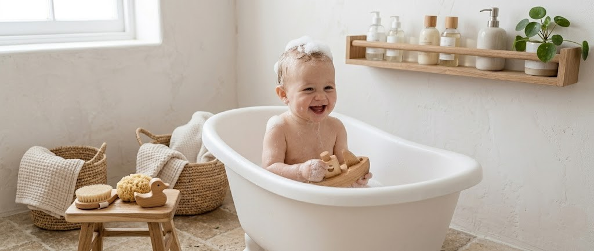
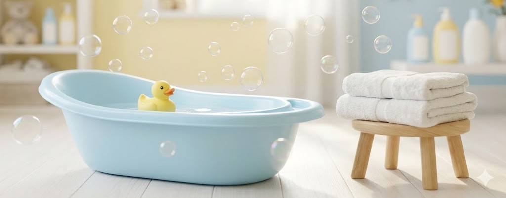

Tips para bañar al bebé

Preparación previa
Antes de acercar al bebé al agua, asegúrate de tener absolutamente todo a la mano: jabón líquido especial para bebés, una toallita suave o esponja, su toalla (de preferencia con capucha), un pañal limpio y su ropita.
La temperatura perfecta
La habitación debe estar cálida (entre 22°C y 24°C) y libre de corrientes de aire para que el bebé no pase frío al salir.
Debe estar tibia, idealmente alrededor de los 37°C. El truco clásico es comprobar la temperatura introduciendo el codo o la parte interna de la muñeca; debe sentirse agradable, ni muy fría ni muy caliente.
La cantidad de agua adecuada
No es necesario llenar la bañera hasta el borde. Unos 5 a 7 centímetros de agua son más que suficientes para lavar al bebé de forma segura.

Sujeción firme y segura
Usa tu brazo no dominante para sostener su cabeza, cuello y espalda en todo momento. Con la mano libre, puedes ir arrojándole un poco de agua en el cuerpecito para mantenerlo calientito mientras lo bañas.
De lo más limpio a lo más sucio
- Limpia sus ojitos con una bolita de algodón o toallita húmeda solo con agua, limpiando desde el lagrimal hacia afuera. Usa un algodón distinto para cada ojo.
- Luego, lava el resto del cuerpo y el cabello usando una cantidad muy pequeña de jabón neutro para no resecar su delicada piel.
- Deja el área del pañal para el último paso.
Secado a toques
- Al sacarlo, envuélvelo rápidamente. Sécalo dando pequeños y suaves toques con la toalla, sin frotar.
- Presta mucha atención a los pliegues de su piel (detrás de las orejas, el cuello, las axilas y los muslos). Es vital que estas zonas queden bien secas para evitar irritaciones.